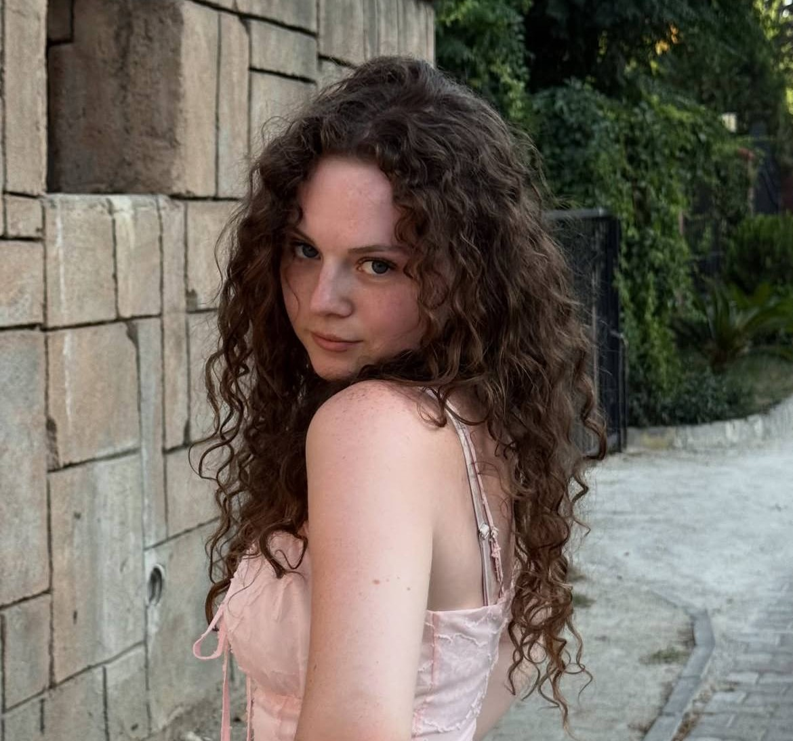

Женская биозавивка
Завиток живёт 6–8 месяцев при правильном домашнем уходе.
Салон естественной красоты · Санкт-Петербург
Помогаем волнам и завиткам раскрыться — с заботой, вниманием к вашей текстуре и без борьбы с природой.
Свои кудри — своя история. Давайте подчеркнём её.
Для волн, локонов и спиралей
Работаем с естественной текстурой и подбираем ритуал именно для вас.
Завиток живёт 6–8 месяцев при правильном домашнем уходе.
Макушка или вся голова — аккуратный кудрявый формат для коротких стрижек.
Меньше пористости, локон прочнее — процедура с накопительным эффектом (4–6 недель).
Три шага: фото волос, история ухода и референс по результату.
Знакомьтесь
Мы сами знаем, каково это — искать подход к непослушному завитку.

Люблю возвращать локонам силу, сияние и тот самый «вау, это мои волосы?».
Нам доверяют свои локоны
«Впервые вышла из салона с ощущением, что мои волосы — это достоинство, а не задача. Кудри лежат прекрасно!»
«Анна объяснила каждый шаг, подсказала уход. Теперь укладываюсь за 15 минут и обожаю отражение.»
«Наконец-то мужская завивка, которая не пытается выпрямить мои кудри. Форма — огонь, утром просто освежаю водой.»
Прозрачно и спокойно
Стоимость зависит от длины и густоты волос. Перед началом мастер согласует план и цену.
Задать вопросСрок носки биозавивки — 6–8 месяцев; окудрение обновляет завиток каждые 4–6 недель.
Частые вопросы
6–8 месяцев при правильном домашнем уходе. Локон остаётся живым и упругим, если использовать бессульфатный уход и не перегружать волосы силиконами.
Это процедура с накопительным эффектом, которая:
Срок носки — 4–6 недель, затем процедуру можно повторить.
Три простых шага: 1) пришлите 3–4 фото волос (спереди, сзади, сбоку); 2) опишите краткую историю волос за последние 1–1,5 года — окрашивания, хна, ботокс, кератин и др.; 3) пришлите референс или опишите, какой результат вы ждёте от процедуры биозавивки.
Да. Предлагаем два варианта: макушка (верхняя часть) или вся голова. Снятие завивки (не кератин) также доступно.
Рекомендуем бессульфатные шампуни, увлажняющие маски 1–2 раза в неделю и несмываемый уход для кудрявых волос. Расчёсывайте влажные волосы гребнем с широкими зубьями, не трите полотенцем — лучше промакивать.
Да, снятие завивки возможно. Для женских волос — от 1 000 ₽, для мужских (не кератин) — 4 500 ₽. Мастер оценит состояние волос и подберёт безопасный способ снятия.
Будем рады знакомству
Оставьте заявку — мы бережно подберём время и мастера.
Сначала бесплатная консультация в мессенджере — без обязательств.